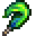
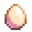

Animali

|
Traduzione incompleta Questo articolo o sezione non è stato completamente tradotto in italiano. Siete invitati a collaborare alla sua traduzione modificandola. |
| Articolo Stub
Questo articolo è uno stub e mancano informazioni. Puoi aiutare Stardew Valley Wiki espandendolo! |
Gli Animali adempiono a molti ruoli all'interno della tua fattoria. Alcuni sono selvatici, ciò significa che non puoi interagirci. Puoi avere un animale da compagnia, un gatto o un cane, con il quale stringere amicizia, puoi ottenere un cavallo da cavalcare e, ovviamente, puoi acquistare degli "animali da fattoria" che rappresentano la fonte principale per svariate tipologie di prodotti, fornendo risorse e profitto.
La stragrande maggioranza degli animali (a eccezione di quelli da compagnia e di quelli selvatici) necessita di diversi edifici per allocarli. Queste strutture possono essere ottenute da Robin alla Bottega del falegname e necessitano solitamente di tre giorni ognuna per essere costruite. Gli "animali da fattoria" piccoli (e il relativo equipaggiamento necessario alla raccolta dei prodotti) possono essere acquistati al Ranch di Marnie. Gli animali possono inoltre essere schiusi in una Incubatrice. Non appena un animale viene comprato deve essere assegnato ad una struttura esistente della tipologia corretta, la quale verrà designata come sua casa. Ogni costruzione ha un limite al numero di animali che può contenere. Se successivamente vuoi assegnare un animale da un edificio differente, coccolandolo ti apparirà il box informativo con un controllo che permette la riassegnazione.
Gli animali da fattoria cuccioli devono diventare adulti prima di essere in grado di produrre. Ogni mattina, gli animali adulti che vivono in "gabbie" (ad es. galline, anatre, conigli o dinosauri) hanno una possibilità di dare prodotti che possono essere raccolti dal pavimento del loro edificio. Usando il secchio per latte, le mucche possono essere munte ogni giorno, mentre le capre possono essere munte ogni due giorni. Le pecore possono essere tosate con le cesoie quando la loro lana è cresciuta, invece i maiali vanno lasciati fuori a scavare i tartufi, che poi si possono raccogliere.
Gatto o cane
Il giocatore può adottare un gatto o un cane, a seconda di quale è stato scelto nella schermata di creazione del personaggio. Ci sono tre diversi stili di gatto e tre diversi stili di cane.
Si attiverà un filmato in cui Marnie aspetterà fuori dalla porta della fattoria con un cane o un gatto il primo mercoledì o venerdì mattina soleggiato di Primavera dopo aver guadagnato  1 000o. Per attivare questo evento è necessario uscire dalla Casa della fattoria tra le 6am e le 9am. Entro il 20 di primavera l'evento si attiverà, indipendentemente dal fatto che il giocatore abbia guadagnato abbastanza soldi. L'adozione dell'animale domestico è facoltativa. Qualsiasi nome può essere scelto per l'animale al momento dell'adozione, anche se il suo nome non può essere cambiato dopo averlo adottato. Se il giocatore non ha ancora incontrato Marnie prima di questo filmato, l'incontro conterà come introduzione.
1 000o. Per attivare questo evento è necessario uscire dalla Casa della fattoria tra le 6am e le 9am. Entro il 20 di primavera l'evento si attiverà, indipendentemente dal fatto che il giocatore abbia guadagnato abbastanza soldi. L'adozione dell'animale domestico è facoltativa. Qualsiasi nome può essere scelto per l'animale al momento dell'adozione, anche se il suo nome non può essere cambiato dopo averlo adottato. Se il giocatore non ha ancora incontrato Marnie prima di questo filmato, l'incontro conterà come introduzione.
L'animale ha un'amicizia massima di 1000, che aumenta di 12 ogni volta che viene accarezzato. Ogni 200 punti equivalgono a 1 livello e avere 999 punti amicizia renderà il giocatore idoneo per 1 punto nella valutazione Nonno. Fare click sull'animale una volta al giorno per accarezzarlo. 
Dopo aver raggiunto 1000 punti amicizia con l'animale, viene visualizzato il seguente messaggio: " <Nome animale> ti ama ♡" A parte questo messaggio, non c'è modo di controllare l'amicizia con l'animale nel gioco.
C'è una ciotola su alcune assi di legno da qualche parte nella fattoria. Si trova nell'area in alto a sinistra accanto alla casa nella fattoria standard, silvana, desolata, collinare e fluviale. Si trova all'intersezione delle diverse sezioni della fattoria quattro cantoni e proprio sopra la sponda destra della fattoria costiera. Può essere riempita d'acqua per l'animale. Innaffiare la ciotola dell'animale aumenterà di 6 punti l'amicizia dell'animale entro la mattina successiva. Nota che questo non si attiverà se piove la mattina successiva. Nei giorni di pioggia, la ciotola dell'animale sarà automaticamente piena. Se piove prima di adottare un animale domestico, la ciotola rimarrà piena fino all'adozione di un animale domestico.
Non ci sono meccanismi di gioco per cui il livello amicizia con l'animale domestico possa diminuire. Ignorare l'animale non farà diminuire l'amicizia.
Dopo aver guadagnato 4 cuori di Amicizia con il Mago, il giocatore può entrare nel suo seminterrato e cambiare lo stile del gatto o del cane all'Altare delle illusioni per  500o. L'animale non può essere cambiato da gatto a cane o viceversa.
500o. L'animale non può essere cambiato da gatto a cane o viceversa.

Ciotola per animali domestici vuota

Ciotola per animali domestici piena


Cavallo
Il cavallo è una cavalcatura in-game che aumenta la velocità di movimento del 30% (aumentata bevendo del caffè) e non rallenta mentre si cavalca tra i raccolti della fattoria. Si ottiene acquistando la Stalla dalla Bottega del falegname e gli si può dare il nome la prima volta che il giocatore prova a cavalcarla.
Lasciare il cavallo da qualche parte lo farà aspettare il giocatore e al suo ritorno verrà mostrato uno di questi messaggi: "<Nome del cavallo> si chiede dove sei stato" o "Il tuo fedele cavallo aspetta pazientemente il tuo ritorno". Andando a letto dopo aver lasciato il cavallo fuori alla fattoria, il cavallo troverà automaticamente la strada di casa e nella stalla il mattino successivo.
Il cavallo non può viaggiare attraverso piccoli spazi (tranne i cancelli) quando viaggia in verticale.
Questi possono essere interagiti mentre si è montati sul cavallo:
- Cancello: può essere aperto e chiuso.
- Stia e Granaio: le porte possono essere aperte e chiuse.
- Cassa delle spedizioni: gli oggetti possono essere riposti all'interno.
- Laghetto per pesci: puoi raccogliere oggetti, aggiungere pesci, aggiungere oggetti missione, cambiare aspetto e svuotare il laghetto.
- Paesani: si può parlare agli abitanti del villaggio.
Il Flauto equino può essere usato per teleportare il cavallo dal giocatore. Funziona solo all'aperto (tra cui all'Isola Zenzero e nel deserto).
I cappelli possono essere posizionati sui cavalli.
Cura degli animali
Amicizia
Gli animali che vivono in stalle e stie hanno un indice di amicizia che può essere visto facendo clic con il pulsante destro del mouse sull'animale dopo averlo accarezzato (mentre si tiene in mano il fieno, non è possibile aprire questa finestra e può essere utile per non aprirla accidentalmente). Il punteggio è su 5 cuori, viene mostrato in incrementi di mezzo cuore e viene preso in considerazione quando si decide la probabilità che quell'animale produca prodotti di qualità superiore se quell'animale è in grado di produrli in primo luogo. Ogni mezzo cuore equivale a 100 punti di amicizia, rendendo il valore massimo dell'amicizia 1000.
Le azioni che influenzano l'amicizia sono le seguenti:
- Accarezzare(+15 o +30 se il giocatore ha abilità Pastore o Mastro di Stia e l'animale è del tipo pertinente)
- Mungitura o tosatura (+5, Nessuna penalità per non essere munto o tosato)
- Mangiare Erba Fuori (+8)
- Non alimentato (-20 Calcolato a fine giornata )
- Intrappolato fuori durante la notte (-20 Calcolato a fine giornata)
- Non accarezzato / parlato con (-5 to -10, Calcolato a fine giornata con la formula: (10 - (Amicizia attuale / 200))) Ciò significa che perderanno meno amicizia, se sono già con alta amicizia.
Umore
Come l'amicizia, l'umore attuale di un animale può essere controllato facendo click con il pulsante destro del mouse dopo aver accarezzato l'animale.
L'umore è un fattore molto importante per determinare la qualità e il tipo di prodotto animale. Viene preso in considerazione solo quando il gioco rilascia prodotti animali all'inizio della giornata e non ha alcun effetto altrimenti.
L'umore è un valore compreso tra 0 e 255. Puoi stimare il suo valore corrente dal messaggio nella finestra di dialogo con il tasto destro del mouse sugli animali:
- <Nome Animale> sembra davvero felice oggi! indica che l'umore è almeno 200 e massimo 255.
- <Nome Animale> sembra stare bene. indica che l'umore è almeno 30 e inferiore a 200.
- <Nome Animale> sembra di malumore. indica che l'umore è almeno 0 e inferiore a 30.
Le azioni che influenzano l'umore sono le seguenti (ogni 10 minuti si riferisce ai minuti di gioco):
- Accarezzare (da +32 a +36 dipendente dal tipo di animale, doppio importo se il giocatore ha scelto Pastore o Mastro di stie come professione e l'animale è del tipo pertinente)
- Mangiare Erba Fuori (Imposta l'umore su 255)
- Nella stagione invernale e l'animale si trova in un'area con un Calorifero, e ha un umore 150 o superiore (Da +4 a +8 ogni 10 minuti dopo le 6pm il giocatore resta sveglio, fino a 255. È richiesto un solo calorifero. sovrascrive tutti gli altri effetti "ogni 10 minuti" ")
- L'animale è stato nutrito (da +4 a +16, dipendente dal tipo di animale, calcolato quando il giocatore dorme, controlla se l'animale ha mangiato fieno o erba)
- L'animale rimane fuori dopo le 6pm, ma rientra prima delle 7pm e ha meno di 150 umore (da +4 a +8 ogni 10 minuti 'non si accumula con nessun altro effetto "ogni 10 minuti"' ')
- L'animale rimane fuori sotto la pioggia o d'inverno ( 'da -4 a -8 ogni 10 minuti' non si accumula con nessun altro effetto "ogni 10 minuti" )
- L'animale rimane fuori dopo le 7pm ( 'da -4 a -8 ogni 10 minuti' non si cumula con nessun altro effetto "ogni 10 minuti" )
- L'animale ha dormito fuori ( '-Metà dell'umore attuale' , calcolato quando il giocatore dorme)
- L'animale non è stato accarezzato ( 'da -20 a -40' , a seconda del tipo di animale, calcolato quando il giocatore dorme)
- L'animale non è stato nutrito ( '-100' calcolato quando il giocatore dorme)
Prodotti
Ogni tipo di animale ha un diverso numero di giorni necessari prima di poter realizzare un prodotto. Ad esempio, mucche e galline possono produrre latte e uova tutti i giorni e le capre generalmente producono latte a giorni alterni. Tuttavia, gli animali che possono produrre un prodotto Deluxe / Grande a volte producono più frequentemente (vedere "Caso speciale" di seguito).
Se l'animale ha raggiunto il numero di giorni richiesto per creare il suo prodotto, verranno effettuati alcuni controlli aggiuntivi per determinare se effettivamente produrrà.
- Se l'animale non è stato nutrito, non produrrà.
- Se l'animale ha meno di 70 umore, c'è la possibilità che non produca. Più basso è l'umore, meno è probabile che produca. (La probabilità percentuale che produrrà ancora è uguale a Umore/70)
Se un animale produce un prodotto Deluxe o Grande, la qualità dei prodotti è determinata all'inizio della giornata da una certa casualità e da una combinazione di umore e amicizia.
- Se un animale ha 150 umore o più, acquisirà la capacità di produrre prodotti di qualità e grandi o deluxe. ( 'Nota, questa è solo l'abilità, la possibilità effettiva per questi articoli è trattata nelle sezioni seguenti, i prodotti di qualità e Grande / Deluxe non sono garantiti')
- Se un animale ha meno di 150 umore, ha ancora la possibilità di produrre prodotti di qualità e grandi o deluxe. Più basso è l'umore, meno probabile. (La probabilità percentuale di ottenere l'abilità è pari a Umore / 150)
Caso speciale: se un animale soddisfa il requisito di produrre qualcosa, ma non ottiene la capacità di creare un prodotto di qualità o grande / deluxe, il gioco non registrerà il fatto che ha prodotto un oggetto quel giorno. In questo caso, gli animali che normalmente impiegherebbero più giorni per la produzione, produrranno di nuovo immediatamente il giorno successivo.
Prodotti Deluxe e Grandi
Un "Modificatore dell'umore" viene calcolato quando si decide se i prodotti Deluxe (Prodotti di grandi dimensioni, penne d'anatra e zampe di coniglio) verranno creati nei seguenti modi:
- Se l'umore è maggiore di 200, verrà moltiplicato per 1,5
- Se l'umore è pari o inferiore a 100, il "Modificatore dell'umore" sarà l'umore degli animali meno 100 (Ciò comporterà sempre un modificatore negativo o zero)
- Altrimenti il "Modificatore dell'umore" è zero (l'umore è maggiore di 100 e fino a 200)
Questo "Modificatore dell'umore" verrà utilizzato in modi diversi a seconda dell'animale.
Prova a rimanere al di sopra di 200 umore per un grande bonus
Penna d'anatra e Zampa di coniglio
Anatre e conigli terranno conto della Fortuna giornaliera per determinare se creeranno i loro prodotti Deluxe.
Per ogni coniglio, viene creato un punteggio complessivo utilizzando la seguente formula: (Amicizia + Umore × Modificatore dell'umore)/5000 + Fortuna giornaliera
Per ogni anatra, viene creato un punteggio complessivo utilizzando la seguente formula: (Amicizia + Umore × Modificatore dell'umore)/4750 + Fortuna giornaliera
Ad esempio, un coniglio con 600 Amicizia (3 Hearts), 150 Umore, and 0.10 Fortuna giornaliera, verrebbe calcolato come:
=(600 + (150 × 0))/5000 + 0.10
=(600+0)/5000 + 0.10
=0.22
Ogni volta che un prodotto viene rilasciato, un numero casuale compreso tra 0 e 1 viene dato contro questo punteggio. Se il punteggio complessivo è superiore al numero casuale, verrà creato un prodotto Deluxe. Al massimo di Amicizia, Umore e Fortuna, c'è una probabilità del 40% di ottenere una Zampa di coniglio e una probabilità del 42% di ottenere una Penna d'anatra
Uova grandi e latte grande
Affinchè gli animali producano un prodotto Grande, il gioco terrà conto dell'umore e dell'amicizia.
Solo gli animali con 200 o più di amicizia, produrranno prodotti Grandi.
Ogni animale avrà un punteggio complessivo calcolato con la seguente formula:
(Amicizia + Mood Modifier)/1200
Ad esempio, un animale con 600 Amicizia (3 cuori) e 210 Mood sarà calcolato come:
=((600 + (210*1.5))/1200
=(600+315)/1200
=0.7625
Ogni volta che viene creato un prodotto, viene scelto casualmente un numero tra 0-1. Se il punteggio complessivo è maggiore del numero casuale, verrà prodotto un prodotto Grande. Nel nostro esempio c'è il 76% di probabilità di ottenere un prodotto Grande. Un punteggio complessivo di almeno 1200 vi garantirà un prodotto Grande.
Qualità
Se l'animale ha la capacità di produrre un oggetto di qualità, passera la qualità da regolare a iridio.
Ogni animale avrà un 'punteggio' complessivo creato con la seguente formula: ((Amicizia/1000) - (1 - (Umore/225))
Ad esempio, un animale con 600 Amicizia (3 Cuori) e 150 Umore sarebbe calcolato così:
=((600/1000) - (1 - (150/225))
=0.6 - (1 - 0.666...)
=0.6 - 0.333...
=0.266...
Se il giocatore possiede Pastore o [Fattoria#Abilità della fattoria|Mastro di stie]] come professione, e l'animale è di un tipo pertinente, 0,333 verrà aggiunto al 'punteggio' .
Il gioco inizierà a controllare quale qualità creare vedendo prima se il valore del punteggio è superiore a 0,95. Se lo è, il punteggio diviso per 2 verrà confrontato con un numero casuale compreso tra 0-1. Se il punteggio diviso per 2 è maggiore del numero casuale, l'oggetto sarà di qualità Iridio.
- Nel nostro esempio, un punteggio di 0,266... non è superiore a 0,95; l'oggetto non potrebbe diventare Iridio.
Se non viene prodotto un articolo di qualità Iridio, il punteggio diviso per 2 verrà confrontato con un numero casuale compreso tra 0-1. Se il punteggio diviso per 2 è maggiore del numero casuale, l'oggetto sarà di qualità Oro.
- Nel nostro esempio, un punteggio di 0.266... verrebbe diviso per 2 per diventare 0.133...; l'oggetto avrebbe una probabilità del 13% di diventare di qualità Oro.
Se un articolo di qualità Gold non viene prodotto, il punteggio verrà confrontato con un numero casuale compreso tra 0-1. Se è maggiore del numero casuale, l'oggetto sarà di qualità Argento.
- Nel nostro esempio, se l'oggetto non fosse Oro, avrebbe una probabilità del 26,6% di essere di qualità Argento.
Se l'articolo non è di qualità Argento, sarà di qualità Regolare.
Abitazioni
Degli edifici possono essere acquistati alla Bottega del falegname, e saranno completati entro alcuni giorni. Una volta piazzati, possono anche esser spostati alla Bottega del falegname.
I Granai, Le Stie e le Gabbie per melme ospitano gli animali. I Silo conservano il fieno, e la Stalla sblocca il Cavallo.
Se vengono costruiti 2 o più Stie o Granai, gli animali possono essere riposizionati facendo click sull'animale e scegliendo l'icona della casa.
Alimentazione
Gli animali da fattoria che vivono nei granai e nelle stie hanno bisogno di mangiare ogni giorno, una "porzione" per animale. Possono mangiare sia erba fresca (se consentita l'uscita all'esterno) che fieno (se tenuti all'interno o se non riescono a trovare erba). Non muoiono se non vengono nutriti, ma diventano di cattivo umore e cessano la produzione di prodotti animali fino alla ripresa dell'alimentazione. Non hanno bisogno di essere nutriti in un giorno di festival (tranne durante i giorni del Mercato notturno), anche se mangeranno erba se lasciati fuori. Il fieno non verrà consumato se ne viene lasciato all'interno.
Gli animali appena schiusi, nati o acquistati non hanno bisogno di essere nutriti il giorno in cui arrivano alla fattoria, ma in seguito i cuccioli hanno bisogno di mangiare una "porzione" (la stessa degli adulti) ogni giorno. Se non hanno cibo, non crescono in quel giorno.
Gli animali della fattoria preferiscono l'erba fresca al fieno e diventano "molto felici oggi!" (il migliore umore) dopo aver mangiato erba fresca. Non usciranno in inverno, o quando è piovoso, tempestoso o nevoso. Gli animali che rimangono all'interno o non trovano erba da mangiare mangeranno invece il fieno, se disponibile. Dato che coltivare cibo per animali è quasi impossibile in inverno (tutta l'erba e il grano nella fattoria scompaiono in Inverno 1), è consigliabile prepararsi raccogliendo quanto più fieno possibile in autunno.
Le melme in una Gabbia per melme non hanno bisogno di cibo, ma i loro abbeveratoi possono essere riempiti quotidianamente con l'acqua dell'annaffiatoio o automaticamente con un irrigatore. Se annaffiati, produrranno palle di melma il giorno successivo.
Cavalli e animali domestici non hanno bisogno di mangiare, ma gli animali domestici saranno più felici una volta riempita la ciotola dell'acqua ogni giorno.
Animali intrappolati fuori
Un animale può essere intrappolato fuori da un granaio o da una stia se le porte sono chiuse di notte. Le condizioni che causano l'intrappolamento di un animale all'esterno non sono chiare. È più probabile che un animale rimanga intrappolato all'esterno se il giocatore non lascia la fattoria dopo le 5pm (quando gli animali iniziano a tornare nel granaio / stia) e non entra nel granaio / stia dopo le 5pm. (Lasciare la fattoria e entrare nel granaio / stia dopo le 5pmsembra che entrambi causino il trasporto o la deposizione delle uova all'interno del granaio / stia automaticamente). Potrebbe anche essere più probabile che accada se il giocatore va a letto prima delle 5pm.
Se piove il giorno successivo e l'animale è stato lasciato fuori, l'animale rimarrà fuori sotto la pioggia. Questo è l'unico caso in cui un animale da fattoria sarà fuori durante la pioggia. Allo stesso modo, se un animale è intrappolato all'esterno la notte del 28 di Autunno, l'animale rimarrà fuori il 1 di Inverno.
Un animale lasciato fuori dal sua granaio/stia sarà scontroso il giorno successivo.

Animale scontroso

Animale sotto la pioggia

Animale fuori in inverno
Attacchi di animali selvatici
Se un animale è stato intrappolato all'esterno (vedere la sezione precedente) con le porte della stia o del granaio chiuse, c'è la possibilità che venga attaccato da un animale selvatico durante la notte.[1]
Dopo che il giocatore si è addormentato, tutti gli eventi che si verificano durante la notte (come gli eventi dei Pacchetti) vengono calcolati normalmente. Se non si verificano eventi, ci sarà una probabilità del 50% che il gioco tenti di avviare un evento di attacco di animali selvatici. Se questo evento procede, il gioco calcolerà tutti gli edifici per trovare un fienile o una stia con le porte "chiuse" e gli animali lasciati fuori.
Per ogni edificio, il gioco prende un numero casuale compreso tra 0 e 1 e lo confronta con 1 / (il numero di edifici agricoli totali). Se il numero casuale è maggiore, l'edificio viene ignorato. In altre parole, più edifici ha il giocatore, meno è probabile che venga attaccato. Ad esempio, se il giocatore ha due edifici agricoli, ogni edificio ha una probabilità del 50% di essere attaccato, tre edifici darebbero il 33%, quattro darebbero il 25% di possibilità di essere attaccati, ecc.
Una volta scelto un edificio, l'evento prende il primo animale bloccato fuori da quell'edificio come bersaglio dell'attacco. L'animale verrà rimosso dal gioco e al mattino, tutti gli altri animali avranno un messaggio dell'umore che dice "#nome animale#" oggi sembra stressato e paranoico. Sembra che ieri sera sia successo qualcosa di brutto ". Oltre a questo messaggio, gli altri animali non sono interessati.
Nascite degli animali
Simile agli attacchi di animali selvatici, se non ci sono altri eventi che si verificano nella notte, ci sarà una probabilità del 50% che il gioco tenti un evento di nascita di animali. Il gioco cerca in tutti gli edifici un granaio aggiornato che non è pieno. Il gioco effettua quindi un altro controllo in cui vi è una probabilità dello 0,55%* (il numero di animali all'interno) di procedere con l'evento. Ad esempio, un granaio aggiornato con tre animali all'interno avrebbe una probabilità dell'1,65% di superare questo controllo. Se l'edificio fallisce questo controllo, il gioco continuerà ad attraversare tutti gli edifici finché non ne rimane nessuno.
Se un granaio supera tutti questi controlli, viene scelto un animale casuale all'interno. Se l'animale non è piccolo e ha la gravidanza abilitata, quell'animale partorirà.
Vendita di animali
Per vendere un animale da stia o granaio, fai clic con il pulsante destro del mouse sull'animale dopo averlo accarezzato. Viene visualizzata l'interfaccia amicizia / umore. Sposta il cursore sul pulsante della moneta d'oro a destra per vedere a quanto puoi vendere l'animale. Fare clic su quel pulsante e sulla conferma che segue per completare la vendita.
Il prezzo di vendita di un animale da fattoria è Prezzo * ((Amicizia/ 1000) + 0.3).[2]
"Il Prezzo" viene letto dal file di dati del gioco Data/FarmAnimals.xnb.
Animali da stia
Questi animali non possono essere acquistati finché una Stia non viene costruita nella tua fattoria e devono occupare un posto in una stia. Lasceranno i loro prodotti all'interno della stia ogni mattina.
Galline
- Articolo principale: Gallina
Le galline adulte producono uova ogni mattino se nutrite. Le galline più felici possono produrre uova più grandi e di maggior valore.
| Immagine | Nome | Costo | Prodotto | Prezzo di vendita a 5 cuori |
|---|---|---|---|---|
| Gallina | ||||
| Gallina | ||||
| Gallina | ||||
| Gallina del vuoto | n/a | |||
| Gallina dorata | N/A |
Quando si acquista una gallina da Marnie si riceve una gallina bianca o marrone, il colore è casuale.
Dopo aver visto l'evento a 8 cuori di Shane, ogni gallina acquistata da Marnie ha una probabilità del 25% di essere blu. A parte l'aspetto, le galline blu sono identiche alle galline bianche.
Una gallina bianca, marrone o blu (se la blu è stata sbloccata) può essere ricevuta dall'incubazione di un uovo di entrambi i tipi (bianco o marrone).
Una Gallina del vuoto deve nascere da un Uovo del Vuoto in una incubatrice. Ci sono tre modi per ottenere un Uovo del Vuoto. In un evento casuale dopo aver dormito, una Strega sorvolerà una Stia grande o deluxe, lasciando un Uovo del vuoto al mattino. In alternativa, un Uovo del vuoto può essere acquistato da Krobus per  5 000o nelle fogne. Shane può anche regalare un Uovo del Vuoto se si è sposati con lui.
5 000o nelle fogne. Shane può anche regalare un Uovo del Vuoto se si è sposati con lui.
Per ottenere uova dorate e galline dorate, è necessario raggiungere la Perfezione. Successivamente, un uovo dorato può essere acquistato al Ranch di Marnie per  100 000o, dalla Stanza delle noci di Mr. Qi per
100 000o, dalla Stanza delle noci di Mr. Qi per  100 o ottenuto durante l'evento della Strega.
100 o ottenuto durante l'evento della Strega.
Anatre
- Articolo principale: Anatra
Le anatre adulte deporranno un uovo o lasceranno cadere una Penna d'anatra a giorni alterni. Le anatre più felici hanno maggiori possibilità di produrre piume d'anatra invece di un uovo.
| Immagine | Nome | Costo | Requisiti | Prodotto | Prezzo di vendita a 5 cuori |
|---|---|---|---|---|---|
| Anatra | Stia Grande |  Penna d'anatra - 125g |
Conigli
- Articolo principale: Coniglio
| Imagine | Nome | Costo | Requisiti | Prodotto | Prezzo di vendita a 5 cuori |
|---|---|---|---|---|---|
| Coniglio | Stia Deluxe |
Una volta raggiunta una quantità sufficiente di amicizia, possono produrre zampe di coniglio automaticamente, proprio come la lana.
Dinosauri
- Articolo principale: Dinosauro
Per ottenere un dinosauro, è necessario trovare un Uovo di dinosauro durante la caccia di Artefatto e poi metterlo in una Incubatrice. In circa 12,5 giorni, un dinosauro si schiuderà. Il dinosauro si comporta come qualsiasi altro animale da stia, ma depone uova di dinosauro ogni 7 giorni e non emette suoni.
| Imagine | Nome | Costo | Requisiti | Prodotto | Prezzo di vendita a 5 cuori |
|---|---|---|---|---|---|
| Dinosauro | N/A | Stia grande |
Animali da granaio
Questi animali non possono essere acquistati finché un Granaio non viene costruito nella tua fattoria e devono occupare un posto nel granaio. I loro prodotti o vengono raccolti con uno strumento o, nel caso dei maiali, lasciati a terra all'aperto mentre pascolano.
Gli animali da granaio possono avere gravidanze in modo casuale se l'opzione di gravidanza è abilitata nel loro menu di stato. Questo si apre interagendo con l'animale dopo averlo accarezzato. Un'icona a destra del menu può essere attivata per consentire la gravidanza per quell'animale. Se un animale rimane incinta, durante la notte apparirà una finestra di messaggio che dice che un animale ha partorito. Il gioco chiederà quindi al giocatore di scegliere un nome per il nuovo animale. Affinché la gravidanza avvenga, il giocatore deve possedere un Granaio grande e avere abbastanza spazio per un altro animale.
Mucche
- Articolo principale: Mucca
| Immagine | Nome | Costo | Produce | Prezzo di vendita a 5 cuori |
|---|---|---|---|---|

|
Mucca | |||

|
Mucca |
Quando vi si interagisce, le mucche ti tireranno fuori la lingua.
Capre
- Articolo principale: Capra
| Immagine | Nome | Costo | Requisiti | Produce | Prezzo di vendita a 5 cuori |
|---|---|---|---|---|---|

|
Capra | Granaio grande |
Le capre producono latte a giorni alterni.
Pecore
- Articolo principale: Pecora
| Immagine | Nome | Costo | Requisiti | Produce | Prezzo di vendita a 5 cuori |
|---|---|---|---|---|---|

|
Pecora | Granaio deluxe |
Le pecore devono essere tosate quando il loro mantello cresce. Le Cesoie possono essere acquistate al Ranch di Marnie.
Una pecora cresce normalmente nel suo mantello ogni 3 giorni se è stata nutrita e ha almeno 70 felicità.
Se il giocatore ha 900 o più Amicizia con la pecora e l'ha accarezzata almeno una volta, sarà possibile tosare la pecora a giorni alterni.
Se il giocatore ha scelto la professione Pastore, ridurrà il tempo necessario per ricrescere di un ulteriore giorno, facendo crescere il mantello a una pecora ogni singolo giorno.
Maiali
- Articolo principale: Maiale
| Immagine | Nome | Costo | Requisiti | Produce | Prezzo di vendita a 5 cuori |
|---|---|---|---|---|---|

|
Maiale | Granaio deluxe |
I maiali troveranno Tartufi dopo essere stati lasciati all'aperto. I tartufi possono essere messi nel Frantoio per fare dell'Olio di tartufo.
La raccolta sarà influenzata dall'abilità Foraggiamento, che ti consentirà di raccogliere tartufi di qualità iridio con possibilità di doppio raccolto.
Durante l'inverno i maiali non produrranno tartufi poiché il campo è innevato e non lasceranno la stalla.
Struzzi
- Articolo principale: Struzzo
| Immagine | Nome | Costo | Requisiti | Produce | Prezzo di vendita a 5 cuori |
|---|---|---|---|---|---|

|
Struzzo | N/A | Granaio |  Uovo di struzzo - |
Gabbia per melme
- Vedi: Gabbia per melme
Altri animali
Non è possibile interagire con molti animali, come conigli, scoiattoli, rane verdi, corvi, picchi, passeri (piccoli uccelli marroni) e il serpente di mare. Gli scoiattoli possono occasionalmente far cadere a terra nocciole o altri semi degli alberi.
Farfalle
Le farfalle sono abbondanti e sono disponibili in molti colori, anche se possono essere viste solo in primavera e in estate. Per vedere le farfalle, cammina, scuoti o abbatti gli alberi.

Corvi
Ogni notte, c'è la possibilità che i corvi mangino le colture[3] sulla La fattoria. I corvi non mangeranno i raccolti coltivati da semi selvatici, i semi stessi ("ovvero" i raccolti piantati quel giorno) o i raccolti entro un raggio di uno o più spaventapasseri.
Per ogni 16 raccolti (arrotondati per difetto), un corvo può provare a mangiare un raccolto. Questo è al massimo a 4 corvi.
Ogni corvo ha una probabilità del 30% di tentare di mangiare. Un corvo che tenta di mangiare un raccolto proverà 10 volte a trovare un raccolto idoneo. Un corvo sceglie una casella casuale nella fattoria che è dissodata, contiene un albero, contiene erba o ha il pavimento su di essa. (Nota: questa operazione viene eseguita dopo l'annullamento della lavorazione durante la notte[4]) Se questa casella contiene un raccolto che è cresciuto, il corvo smette di cercare. Se il raccolto è nel raggio di uno spaventapasseri, il corvo sarà spaventato. Altrimenti il corvo mangerà il raccolto. Nota che i corvi mangeranno i raccolti morti avanzati dalle stagioni precedenti.
E ogni corvo mangerà solo un raccolto, ma in seguito potrebbe continuare a saltellare e beccare per terra. Questa animazione è puramente cosmetica.
Prima che gli spaventapasseri vengano sbloccati, l'unico modo per assicurarsi che non compaiano i corvi è piantare al massimo 15 raccolti alla volta. Ciò implica che i 15 Semi di pastinaca iniziali forniti da Lewis possono essere tutti piantati in sicurezza. Raccoglierli dà al giocatore abbastanza esperienza per raggiungere il livello 1 in Fattoria e sbloccare gli spaventapasseri. Tuttavia, piantare un solo raccolto aggiuntivo (anche semi selvatici o un raccolto in fase di semina) può innescare i corvi.
Nota che non ci sono corvi nella fattoria dell'Isola Zenzero, quindi questa sezione non si applica alle colture che sono piantate lì.

Lucciole
Le lucciole si possono vedere ovunque di notte, in particolare nella foresta Linfabrace, durante l'estate. Creano un piccolo bagliore di luce intorno a loro.

Gufi
I gufi sono piuttosto rari e possono essere visti solo di notte (7:00pm-2:00am). Si possono vedere in tutte le stagioni.

Gabbiani
I gabbiani appaiono in spiaggia. Possono essere visti galleggiare nell'acqua, senza fare nulla o a pulirsi con il becco. Se il giocatore si avvicina troppo, voleranno via.
Bug
- Se l'animale è in posizione per bloccare il movimento lungo il percorso verso i boschi segreti mentre il giocatore è a cavallo, l'animale non si muoverà per consentire al giocatore di passare.
- È possibile eseguire facilmente glitch attraverso oggetti larghi una casella (come recinti, irrigatori o spaventapasseri) mentre si cavalca. Basta guidare verticalmente lungo l'oggetto, quindi ruotare di 90° nell'oggetto.
- Posizionare il cavallo dietro lo Stand di gelato quando non c'è nessuno permette al giocatore di comprare il gelato. Questo può essere fatto in qualsiasi momento o stagione, ma il cavallo deve essere dietro la parte superiore dell'ombrellone.


Riferimenti
Storia
- 1.3.27: Risolto un bug che causava la diminuzione della felicità degli animali se il giocatore rimaneva sveglio dopo le 6pm. Aggiunta la possibilità di posizionare i cappelli sui cavalli.
- 1.4: Aggiunti 2 nuovi stili di gatto e 2 nuovi stili di cane. Modificabile lo stile dell'animale domestico all'Altare delle Illusioni. Aggiunta la possibilità di rimuovere i cappelli dai cavalli. Rimosso l'exploit che consente di utilizzare la carta da parati #108 in un'incubatrice al posto di un uovo di dinosauro. La pioggia ora riempie la ciotola dell'animale domestico. Le vendite di animali ora contano per i guadagni totali del gioco.
- 1.4.3: Risolto un bug per cui dare il nome a un animale domestico con lo stesso nome di un NPC faceva apparire l'animale al posto dell'NPC sul calendario.
- 1.5: Prezzo di acquisto dell'anatra ridotto da
 4 000o a 1 200o. Il prezzo di vendita della Penna d'anatra è aumentato da 125o a 250o. Tasso di drop della penna d'anatra aumentato. Gli animali domestici non bloccano più la costruzione di nuovi edifici. Gli irrigatori ora possono innaffiare gli abbeveratoi in una Gabbia per melme.
4 000o a 1 200o. Il prezzo di vendita della Penna d'anatra è aumentato da 125o a 250o. Tasso di drop della penna d'anatra aumentato. Gli animali domestici non bloccano più la costruzione di nuovi edifici. Gli irrigatori ora possono innaffiare gli abbeveratoi in una Gabbia per melme. - 1.5.4: Prezzo di vendita dell'anatra ridotto.
| Animali e prodotti | |
|---|---|
| Stia | Anatra (Uovo d'anatra • Penna d'anatra) • Coniglio (Lana • Zampa di coniglio) • Dinosauro (Uovo di dinosauro) • Gallina (Uovo • Uovo grande • Uovo marrone • Uovo grande marrone) • Gallina dorata (Uovo dorato) • Gallina del vuoto (Uovo del Vuoto) |
| Granaio | Mucca (Latte • Latte grande) • Capra (Latte di capra • Latte di capra grande) • Pecora (Lana) • Maiale (Tartufo) • Struzzo (Uovo di struzzo) |
| Laghetto per pesci | Pesce (Uova di pesce) |
| Gabbia per melme | Melme (Melma • Palla di melma • Uovo di melma) |
| Altri | Cane • Cavallo • Gatto |